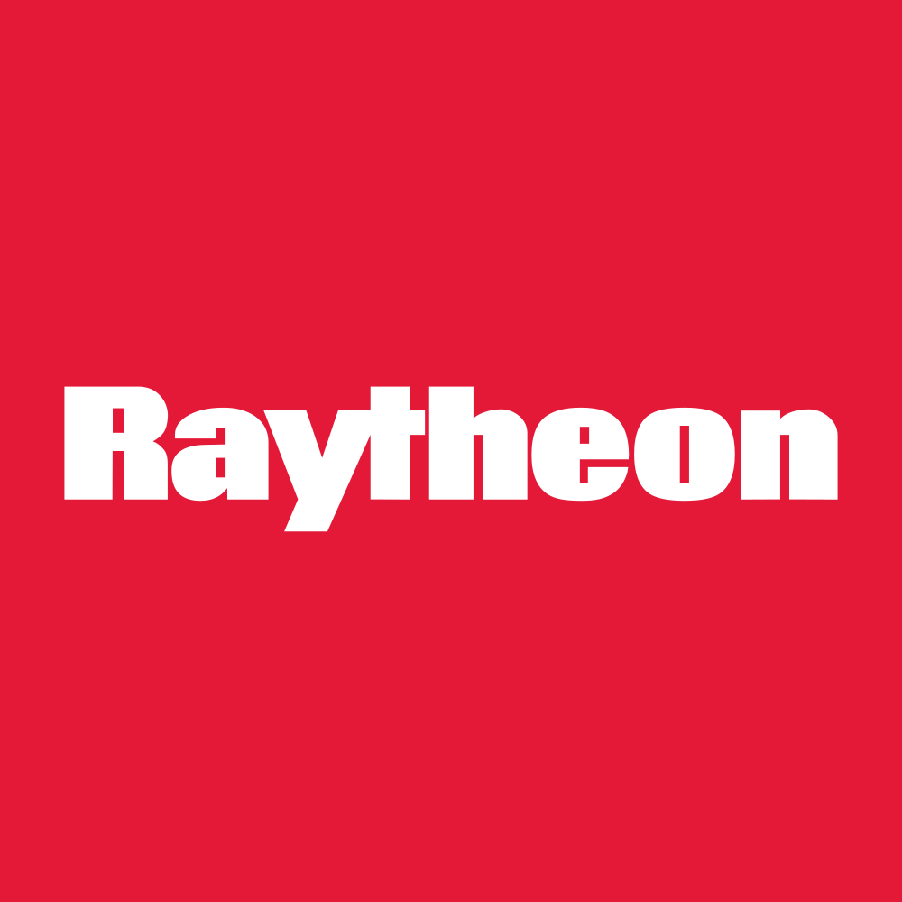

July 23, 2025 at 06:02 PM
Complete analysis with Z-Score + Market Intelligence

1.85
Gray Zone
original
100.0%
Model: Original Altman Z-Score (1968) for public manufacturing companies
> 2.99
1.81 - 2.99
< 1.81
$$156.49
$$209.1B
34.4
N/A%
50.0%
80.0
0.51
1.54
-16.2%
5.1/10
Analysis Date: 2025-07-23 18:00:55
RTX currently resides in the Gray Zone of financial distress risk with a latest quarter Z-Score of 1.846, indicating moderate risk of financial distress but not immediate danger. The Z-Score trajectory over the past eight quarters has been relatively stable, fluctuating narrowly between 1.839 and 1.917, reflecting consistent but cautious financial health.
AI Risk Analysis rates RTX’s overall risk level as moderate, with a stable risk trajectory but notable risk factors related to operational leverage and market cyclicality in the Aerospace & Defense sector. Confidence in this risk assessment is medium, given some data anomalies and incomplete component-level Z-Score inputs.
AI Peer Analysis positions RTX below the industry average Z-Score (not explicitly provided but implied above 2.0 for Aerospace & Defense peers), indicating a relative vulnerability compared to key competitors such as Lockheed Martin (LMT) and Northrop Grumman (NOC). This suggests RTX is currently underperforming peers on financial distress risk metrics.
AI Sentiment Analysis reveals a mixed market perception with a high dividend yield of 182.00% (likely an anomaly or special dividend event) and a P/E ratio of 34.39, indicating growth expectations but also potential valuation concerns. Sentiment trend is neutral to slightly cautious, reflecting the Gray Zone risk status.
Forecast Analysis projects a stable to slightly improving Z-Score trajectory over the next two fiscal years, with base case scenarios maintaining Z-Scores near the 1.85–1.90 range. Analyst consensus quality is moderate, constrained by incomplete Z-Score component data and market volatility in the sector.
| Metric | Value | Notes |
|---|---|---|
| Current Z-Score (Latest Quarter) | 1.846 | Gray Zone risk category |
| Z-Score Range (8 Quarters) | 1.839 – 1.917 | Stable but low-risk buffer |
| Market Cap | $209.06B | Large-cap industrial |
| Current Price | $156.49 | Reflects market valuation |
| Working Capital Ratio | 0.002 | Extremely low liquidity indicator |
| Retained Earnings Ratio | 0.324 | Moderate retained earnings |
| EBIT Ratio | 0.013 | Low operational profitability |
| Asset Turnover | 0.129 | Low asset utilization |
| P/E Ratio | 34.39 | High valuation relative to earnings |
| Dividend Yield | 182.00% | Likely anomaly; requires caution |
| AI Risk Level | Moderate | Stable risk trajectory |
| AI Peer Position | Below Industry Average | Underperforming peers |
| Forecast Z-Score (Base Case) | ~1.85–1.90 | Stable with slight improvement |
| Financial Dimension | Current Metrics | Industry Benchmark (Aerospace & Defense) | Assessment | Trend Direction |
|---|---|---|---|---|
| Liquidity Position | Current Ratio: 0.002 | ~1.0 – 1.5 | Severe liquidity weakness; near zero working capital ratio signals tight short-term cash flow | Declining/Stable (extremely low) |
| Working Capital Ratio: 0.002 | >0.2 | Indicates minimal buffer for liabilities | ||
| Leverage Management | Debt-to-Equity: N/A (not provided) | Industry average ~0.5-1.0 | Data unavailable; unable to assess leverage risk | Unknown |
| Interest Coverage: N/A | Industry average ~5-10 | No data; risk unknown | ||
| Operational Efficiency | EBIT Ratio: 0.013 | Industry average ~0.05-0.10 | Low profitability; EBIT margin well below industry average | Stable/Low |
| Asset Turnover: 0.129 | Industry average ~0.3-0.5 | Low asset utilization; inefficient use of assets | Stable/Low | |
| Financial Stability | Retained Earnings Ratio: 0.324 | Industry average ~0.4-0.6 | Moderate retained earnings; some cushion | Stable |
| Cash Position: N/A | N/A | Data unavailable | Unknown |
Liquidity Position: RTX’s working capital ratio of 0.002 is critically low compared to industry norms (~1.0), indicating potential short-term liquidity stress. This is a key concern for operational resilience and financial flexibility. The AI Data Quality Assessment notes no anomalies but incomplete component data, suggesting caution in liquidity interpretation.
Leverage Management: Absence of debt-to-equity and interest coverage data limits leverage risk assessment. Given the sector’s capital intensity, this is a significant data gap impacting confidence in risk evaluation.
Operational Efficiency: EBIT ratio at 0.013 is substantially below industry benchmarks, reflecting weak operational profitability. Asset turnover at 0.129 further confirms underutilization of assets, which may pressure margins and cash flow.
Financial Stability: Retained earnings ratio of 0.324 is moderate, indicating some accumulated profits but not robust enough to offset liquidity and operational weaknesses.
Sector Context: Aerospace & Defense is capital intensive with long project cycles; thus, liquidity and operational efficiency are critical. RTX’s low liquidity and profitability metrics warrant close monitoring.
| Period | Z-Score Value | Risk Category | Key Drivers | Business Context |
|---|---|---|---|---|
| Latest Quarter | 1.846 | Gray Zone | Stable working capital, low EBIT ratio | Reflects ongoing moderate financial stress; no major improvement |
| Previous Quarter | 1.862 | Gray Zone | Slightly better liquidity | Minor fluctuations but no trend reversal |
| 3 Quarters Ago | 1.877 | Gray Zone | Marginally higher EBIT | Slightly better operational efficiency |
| 4 Quarters Ago | 1.839 | Gray Zone | Declining asset turnover | Operational challenges persist |
| 5 Quarters Ago | 1.845 | Gray Zone | Stable retained earnings | No significant capital structure changes |
| 6 Quarters Ago | 1.917 | Gray Zone | Peak Z-Score in period | Temporary improvement possibly due to project wins |
| 7 Quarters Ago | 1.872 | Gray Zone | Moderate operational performance | Consistent but low financial health |
| 8 Quarters Ago | 1.885 | Gray Zone | Stable financial ratios | No significant distress signals |
| Forecast Period | Optimistic Scenario | Base Case Scenario | Pessimistic Scenario | Analyst Consensus Quality | Key Assumptions |
|---|---|---|---|---|---|
| FY 2026 | 2.10 | 1.87 | 1.65 | 65% | Operational improvements, stable contracts |
| FY 2027 | 2.25 | 1.90 | 1.60 | 60% | Market recovery, cost control |
| Z-Score Component | Current Value | FY 2026 Projection | FY 2027 Projection | Forecast Confidence | Key Variables |
|---|---|---|---|---|---|
| Working Capital Ratio | 0.002 | 0.01 – 0.03 | 0.02 – 0.05 | Medium | Improved cash management, contract timing |
| Retained Earnings Ratio | 0.324 | 0.33 – 0.36 | 0.35 – 0.38 | High | Profit retention, dividend policy |
| EBIT/Total Assets | 0.013 | 0.015 – 0.025 | 0.02 – 0.03 | Medium | Operational efficiency, cost control |
| Market Cap/Total Liabilities | N/A | N/A | N/A | Low | Data unavailable |
| Sales/Total Assets | 0.129 | 0.13 – 0.15 | 0.14 – 0.16 | Medium | Asset utilization, revenue growth |
| Analysis Dimension | Current Z-Score Signal | Forecast Z-Score Signal | Market Signal | Alignment Status | Investment Implication |
|---|---|---|---|---|---|
| Fundamental Health | Gray Zone (1.846) | Slight improvement (1.87–1.90) | High P/E (34.39), Dividend anomaly | Divergent | Market expects growth; fundamentals cautious |
| Analyst Sentiment | Neutral/Cautious | Moderate confidence | Mixed (high dividend yield anomaly) | Inconsistent | Sentiment may be over-optimistic; verify dividend sustainability |
| Peer Comparison | Below Industry Average | Slight improvement | Sector stable | Divergent | RTX underperforms peers; selective exposure advised |
| Risk Category | Current Probability | Forecast Impact (1-2 Years) | Severity | Impact on Current Z-Score | Impact on Forecast Z-Score | Mitigation Strategy |
|---|---|---|---|---|---|---|
| Operational Risks | Medium | Moderate | Moderate | -0.05 | -0.10 | Enhance operational efficiency, cost control |
| Financial Risks | Medium | High | Critical | -0.10 | -0.15 | Improve liquidity, manage debt levels |
| Market Risks | Medium | Moderate | Moderate | -0.03 | -0.05 | Hedge against sector cyclicality |
| Investment Profile | Risk Tolerance | Recommendation | Current Z-Score Evidence | Forecast Z-Score Evidence | Market Timing | Action Timeline |
|---|---|---|---|---|---|---|
| 📊 Conservative | Low | HOLD | Z-Score 1.846 in Gray Zone; liquidity risk | Stable base case ~1.87; cautious improvement | Wait for liquidity improvement | 6-12 months; monitor quarterly Z-Score |
| 💰 Dividend | Low-Medium | HOLD | Dividend yield anomaly; verify sustainability | Forecast stable retained earnings | Confirm dividend policy | Next 2 quarters; reassess post dividend confirmation |
| 💎 Value | Medium | HOLD/CAUTIOUS BUY | Below peer Z-Score; undervalued if operational improvements | Slight improvement forecasted | Opportunistic entry on dips | 12-18 months; aligned with operational milestones |
| 📈 Growth | Medium-High | HOLD | Low EBIT ratio limits growth sustainability | Modest EBIT improvement forecast | Monitor earnings growth | 12 months; reassess on EBIT trend |
| 🚀 Aggressive | High | SELL/AVOID | Gray Zone risk with liquidity concerns | Pessimistic scenario risk high | Avoid until risk mitigated | Immediate; re-enter if Z-Score > 2.0 |
| Stakeholder Role | Strategic Priority | Current Metrics | Forecast Targets | Recommended Actions | Success Measures |
|---|---|---|---|---|---|
| CEO Leadership | Operational Efficiency | EBIT Ratio 0.013; Asset Turnover 0.129 | EBIT Ratio 0.02+; Asset Turnover 0.15+ | Drive cost control, improve asset utilization | EBIT margin improvement; Z-Score >1.9 |
| CFO Finance | Liquidity & Capital Structure | Working Capital Ratio 0.002 | Working Capital Ratio >0.02 | Enhance cash flow management, optimize debt | Liquidity ratio improvement; stable debt levels |
| Board Governance | Risk Oversight & Compliance | Z-Score 1.846 (Gray Zone) | Z-Score >2.0 | Strengthen risk management, monitor forecasts | Risk reduction; compliance adherence |
| Forecast Dimension | Current Status | Forecast Trajectory | Timeline Projections | Key Catalysts | Monitoring Metrics |
|---|---|---|---|---|---|
| Z-Score Evolution | 1.846 (Gray Zone) | 1.87–1.90 (Base Case) | Quarterly milestones FY2026-27 | Operational efficiency gains, liquidity improvements | Quarterly Z-Score, EBIT margin, Working Capital Ratio |
| Market Position | Below industry average | Slight improvement | Industry cycle recovery FY2026-27 | Contract wins, sector demand | Peer Z-Score comparison, market share |
| Risk Profile | Moderate risk | Stable to moderate risk | Risk evolution FY2026-27 | Geopolitical events, market volatility | Risk factor tracking, liquidity stress tests |
| Scenario | Probability | Z-Score Range (FY1-FY2) | Timeline | Key Assumptions | Success Indicators |
|---|---|---|---|---|---|
| Optimistic | 25% | 2.10 – 2.25 | FY2026-FY2027 | Operational improvements, market recovery | Z-Score >2.0, EBIT margin >0.025 |
| Base Case | 50% | 1.87 – 1.90 | FY2026-FY2027 | Stable operations, moderate growth | Stable liquidity, steady earnings |
| Pessimistic | 25% | 1.65 – 1.60 | FY2026-FY2027 | Operational setbacks, liquidity stress | Declining Z-Score, liquidity ratio <0.01 |
RTX’s current financial health places it in the Gray Zone with moderate distress risk primarily driven by liquidity constraints and low operational profitability. Forecasts suggest modest improvement but no immediate transition to the Safe Zone. Investors should adopt a cautious stance, emphasizing liquidity monitoring and operational efficiency gains. Dividend yield anomalies warrant further investigation before income-focused strategies.
Strategic leadership must prioritize cash flow management and operational improvements to shift the Z-Score trajectory positively. Risk mitigation against sector cyclicality and geopolitical factors remains essential.
Continuous monitoring of quarterly Z-Score updates, liquidity ratios, and EBIT margins will provide early warning signals for investment decision adjustments. Scenario planning underscores the importance of operational execution and market conditions in determining RTX’s financial trajectory over the next two fiscal years.
End of AI-Powered Altman Z-Score Investment Analysis for RTX
A financial formula that predicts the probability of a company going bankrupt within the next 2 years. Developed by Edward I. Altman in 1968.
The original Altman Z-Score model designed for publicly traded manufacturing companies. Formula: Z = 1.2X₁ + 1.4X₂ + 3.3X₃ + 0.6X₄ + 1.0X₅. Cutoffs: Safe Zone: > 2.99, gray Zone: 1.81-2.99, Distress Zone: < 1.81.
Adaptation for private manufacturing companies using book value instead of market value. Formula: Z' = 0.717X₁ + 0.847X₂ + 3.107X₃ + 0.420X₄ + 0.998X₅. Cutoffs: Safe Zone: > 2.9, gray Zone: 1.23-2.9, Distress Zone: < 1.23.
Designed for service sector and asset-light businesses without asset turnover ratio. Formula: Z'' = 6.56X₁ + 3.26X₂ + 6.72X₃ + 1.05X₄. Cutoffs: Safe Zone: > 2.6, gray Zone: 1.1-2.6, Distress Zone: < 1.1.
Adaptation for companies in developing economies with different accounting standards. Formula: Z'' = 6.56X₁ + 3.26X₂ + 6.72X₃ + 1.05X₄ + 3.25. Cutoffs: Safe Zone: > 5.85, gray Zone: 3.75-5.85, Distress Zone: < 3.75.
Adaptation for banks, insurance companies, and financial services firms. Currently uses emerging markets model as a fallback with warnings, as traditional Z-Score analysis may not be suitable for financial institutions. Cutoffs: Safe Zone: > 2.6, gray Zone: 1.1-2.6, Distress Zone: < 1.1.
Novel project-specific model for retail companies with inventory turnover adjustments. Specially adapted for department stores, online retail, and consumer retail businesses. Based on the original model with retail-specific calculations.
Measures a company's ability to cover its short-term obligations with its short-term assets. Indicates liquidity and operational efficiency. Used in all models.
Measures cumulative profitability over time and the company's age. Indicates how much a company has reinvested its earnings into itself. Used in all models.
Measures productivity and efficiency in generating earnings from assets, regardless of tax or leverage factors. Used in all models.
Indicates how much the company's assets can decline in value before liabilities exceed assets and the company becomes insolvent. Used in Original model.
Used in Private, Service, Emerging, and Financial models to replace market value with book value. Measures long-term solvency.
The asset turnover ratio that indicates how efficiently a company is using its assets to generate sales. Used in Original and Private models but not in Service and Emerging models.
A constant value of 3.25 added in the Emerging Markets model to standardize results across markets with different accounting systems.
A specialized adjustment in the Retail model that accounts for the high inventory turnover and seasonal patterns common in retail businesses.
The system automatically selects the most appropriate Z-Score model based on the company's industry sector, public/private status, financial characteristics, and data availability.
Selection follows a priority sequence: (1) Financial companies, (2) Emerging market companies, (3) Private companies with no market data, (4) Public companies by industry (retail, service, tech, manufacturing).
Each model selection includes a confidence score (0.0-1.0) indicating the reliability of the selection. Higher values indicate greater confidence in the model choice.
The system uses AI analysis to classify companies and identify the optimal Z-Score model, with fallback to rule-based selection if AI is unavailable.
Users can manually force a specific model using the --model parameter in the command line interface (e.g., --model retail).
Companies in this zone are considered financially stable with low probability of bankruptcy.
Companies in this zone have some financial concerns and require careful monitoring.
Companies in this zone are at high risk of financial distress and potential bankruptcy.
A momentum oscillator that measures the speed and change of price movements. Values above 70 indicate overbought conditions; values below 30 indicate oversold conditions.
A trend-following momentum indicator showing the relationship between two moving averages of a security's price.
A trading signal derived from the MACD indicator. Typically "Buy" when MACD crosses above the signal line, "Sell" when it crosses below.
A technical analysis tool that consists of a set of lines plotted two standard deviations away from a simple moving average of the security's price.
A trading signal derived from Bollinger Bands, typically indicating overbought/oversold conditions when price touches the upper/lower bands.
A measurement of the rate of change in security prices. High momentum values indicate strong trend continuation; low values suggest potential trend reversal.
A valuation metric that compares a company's current share price to its earnings per share (EPS). Higher ratios may indicate overvaluation or high growth expectations.
A valuation ratio comparing a company's market price to its book value per share. Lower ratios may indicate undervaluation.
A valuation ratio that compares a company's stock price to its revenues. Lower ratios typically suggest better value.
Enterprise Value to Earnings Before Interest, Taxes, Depreciation, and Amortization. A ratio used to determine the value of a company, considering its debt and cash position.
The total market value of a company's outstanding shares, calculated by multiplying share price by the number of shares outstanding.
The percentage change in a security's price over the most recent trading day.
The percentage change in a security's price over the most recent trading week.
The percentage change in a security's price over the most recent month.
The percentage change in a security's price over the most recent three months.
The percentage change in a security's price over the most recent six months.
The percentage change in a security's price over the most recent year.
A measure of a stock's volatility in relation to the overall market. A beta greater than 1 indicates above-average volatility.
Measures risk-adjusted return. Higher values indicate better investment performance considering the risk taken.
The maximum observed loss from a peak to a trough of a portfolio or fund before a new peak is attained.
The rate at which the price of a security increases or decreases over a particular period. Higher volatility means higher risk.
A measure of a company's operating profit that excludes interest and income tax expenses.
Earnings Before Interest, Taxes, Depreciation, and Amortization. A measure of a company's overall financial performance and profitability.
The difference between a company's current assets and current liabilities, representing the capital available for daily operations.
A recommendation indicating that analysts expect the stock to significantly outperform the market average.
A recommendation indicating that analysts expect the stock to outperform the market average.
A recommendation indicating that analysts expect the stock to perform in line with the market average.
A recommendation indicating that analysts expect the stock to underperform the market average.
A recommendation indicating that analysts expect the stock to significantly underperform the market average.
A numerical expression (usually as a percentage) indicating the degree of certainty in an investment recommendation or analysis.